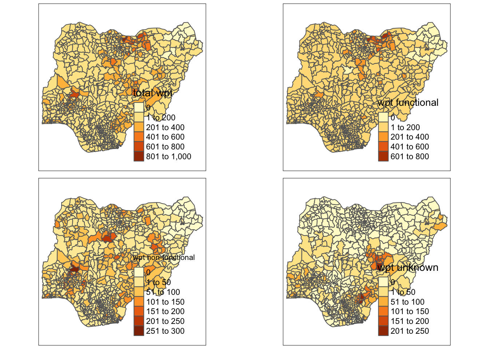
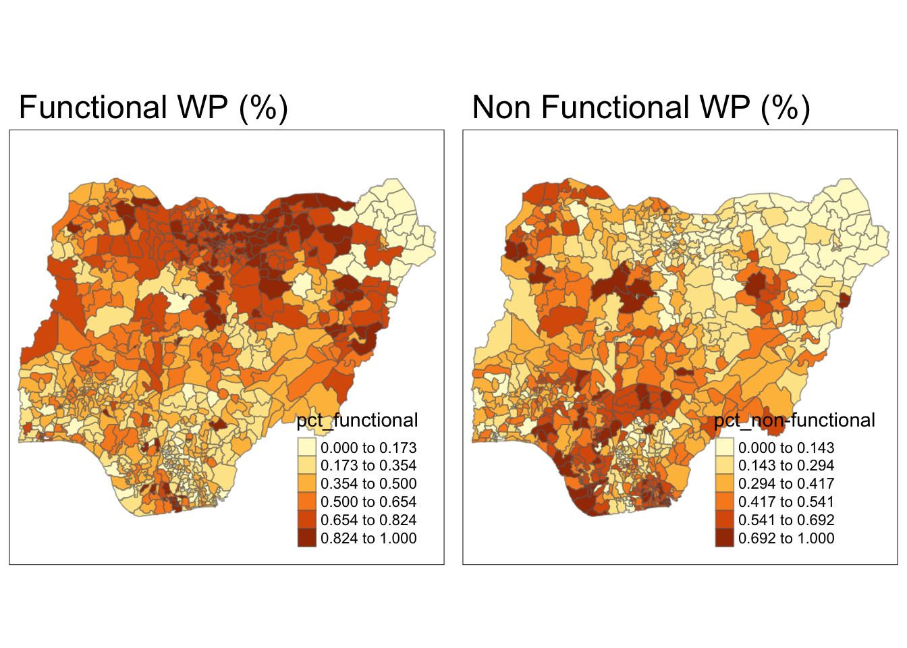
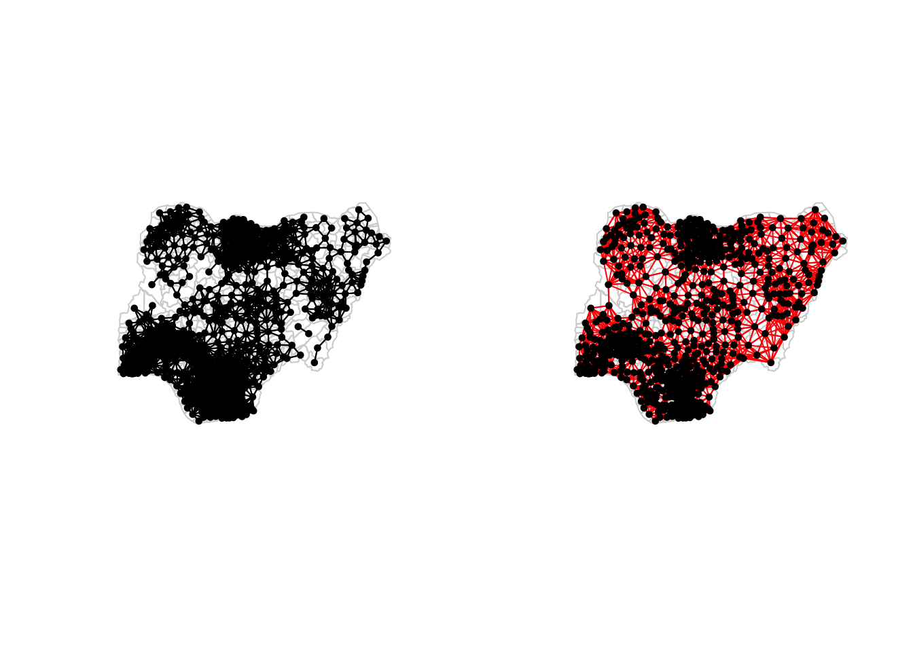
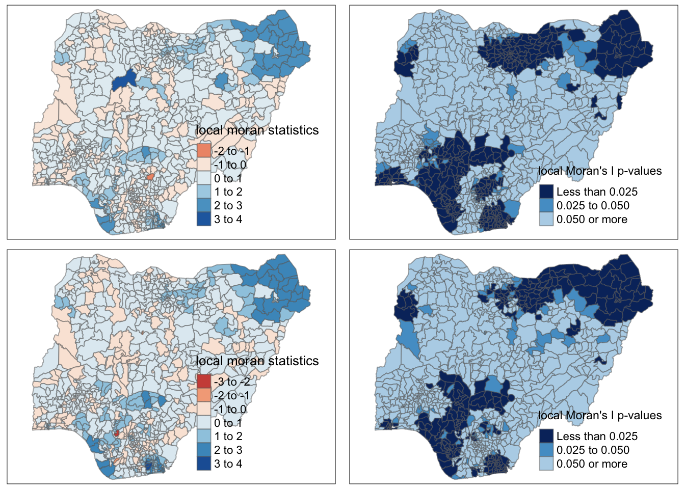
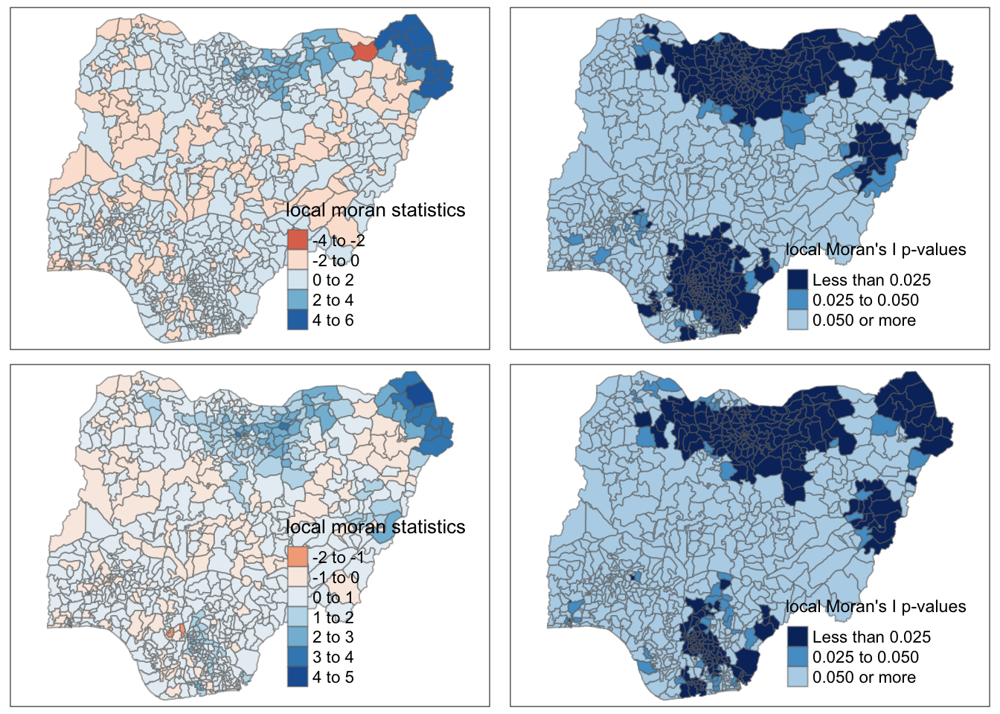
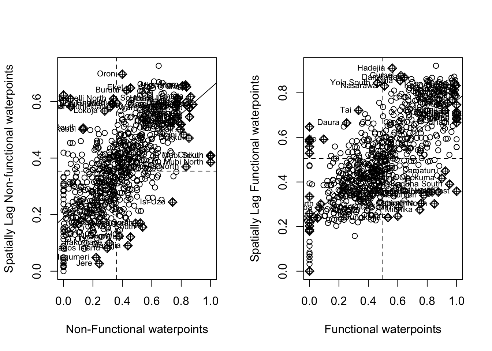
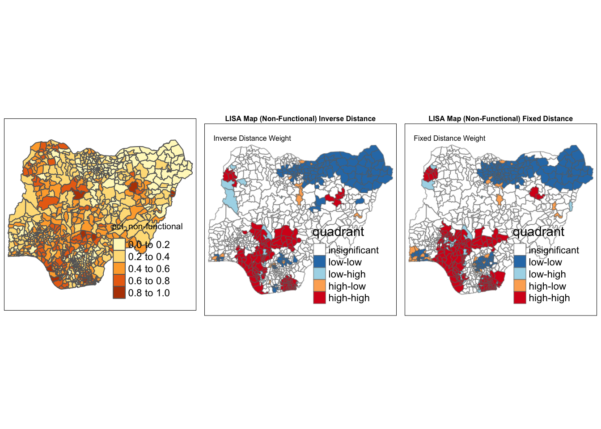
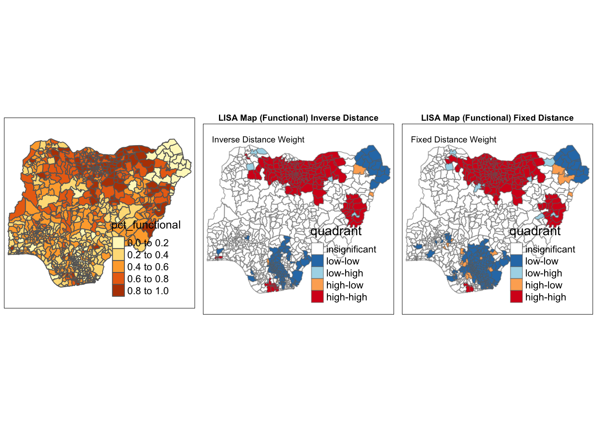
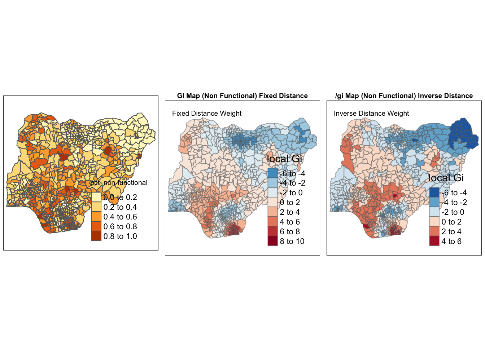
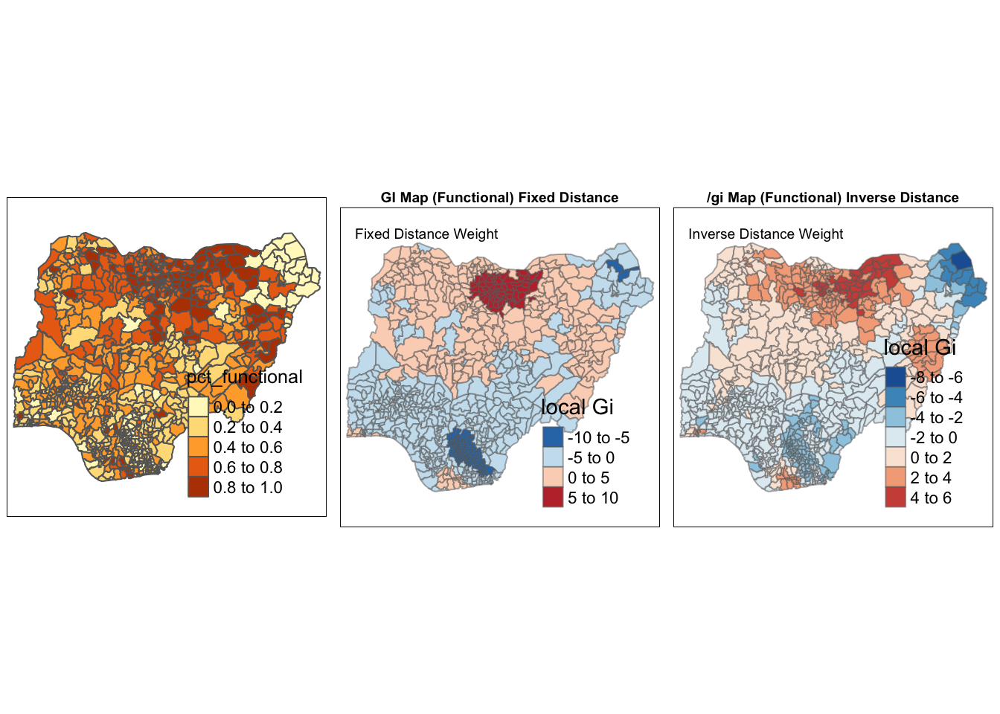

pacman::p_load(sf, tidyverse, tmap, spdep, funModeling)Take Home Ex 1
Task
Developing countries are most affected by water shortages and poor water quality. Up to 80% of illnesses in the developing world are linked to inadequate water and sanitation. Despite technological advancement, providing clean water to the rural community is still a major development issues in many countries globally, especially countries in the Africa continent.
To address the issue of providing clean and sustainable water supply to the rural community, a global Water Point Data Exchange (WPdx) project has been initiated. The main aim of this initiative is to collect water point related data from rural areas at the water point or small water scheme level and share the data via WPdx Data Repository, a cloud-based data library. What is so special of this project is that data are collected based on WPDx Data Standard.
Geospatial analytics hold tremendous potential to address complex problems facing society. In this study, you are tasked to apply appropriate global and local measures of spatial Association techniques to reveals the spatial patterns of Not Functional water points. For the purpose of this study, Nigeria will be used as the study country.
Importing Packages
Importing Geospatial Data
Two datasets to be used:
Waterpoint data from WPdx Global Data Repositories: geo_export
Nigeria Level-2 Administrative Boundary (also known as Local Government Area) polygon features GIS data: nga_admbnda_adm2_osgof_20190417
Importing water point geospatial data
wp_nga <- st_read(dsn='data/geodata', layer='geo_export', crs = 4326) %>%
filter(clean_coun == 'Nigeria')Things to learn from the code chunk above:
st_read()of sf package is used to import geo_export shapefile into R environment and save the imported geospatial data into simple feature data table.filter()of dplyr package is used to extract water point records of Nigeria.
Importing Nigeria LGA boundary data
nga <- st_read(dsn='data/geoBoundaries', layer='nga_admbnda_adm2_osgof_20190417', crs = 4326)Data Wrangling
Re-coding NA values into string
In the code chunk below, replace_na() is used to recode all the NA values in status_cle field into Unknown.
wp_nga <- wp_nga %>% mutate(status_cle = replace_na(status_cle, 'Unknown'))EDA
In the code chunk below, freq() of funModeling package is used to display the distribution of status_cle field in wp_nga.
freq(data = wp_nga, input='status_cle')Extracting Water Point Data
In this section, we will extract the water point records by using classes in status_cle field.
Extracting non-functional water point
In the code chunk below, filter() of dplyr is used to select functional water points.
wpt_functional <- wp_nga %>%
filter(status_cle %in%
c('Functional',
'Functional but not in use',
'Functional but needs repair'
))freq(data = wpt_functional, input='status_cle')Extracting non-functional water point
wpt_nonfunctional <- wp_nga %>%
filter(status_cle %in%
c("Abandoned/Decommissioned",
"Abandoned",
"Non-Functional",
"Non functional due to dry season",
"Non-Functional due to dry season"))freq(data=wpt_nonfunctional,
input = 'status_cle')Extracting water point with Unknown class
In the code chunk below, filter() of dplyr is used to select water points with unknown status.
wpt_unknown <- wp_nga %>%
filter(status_cle == "Unknown")Performing Point-in-Polygon Count
nga_wp <- nga %>%
mutate(`total wpt` = lengths(
st_intersects(nga, wp_nga))) %>%
mutate(`wpt functional` = lengths(
st_intersects(nga, wpt_functional))) %>%
mutate(`wpt non-functional` = lengths(
st_intersects(nga, wpt_nonfunctional))) %>%
mutate(`wpt unknown` = lengths(
st_intersects(nga, wpt_unknown)))nga_wp <- st_transform(nga_wp, crs = 26391)Saving the Analytical Data Table
nga_wp <- nga_wp %>%
mutate(pct_functional = `wpt functional`/`total wpt`) %>%
mutate(`pct_non-functional` = `wpt non-functional`/`total wpt`) %>%
select(3:4, 9:10, 18:23)nga_wp <- nga_wp %>% mutate_at(c('pct_functional','pct_non-functional'), ~replace_na(.,0))Things to learn from the code chunk above:
mutate()of dplyr package is used to derive two fields namely pct_functional and pct_non-functional.to keep the file size small,
select()of dplyr is used to retain only field 3,4,9,10, 18,19,20,21,22,and 23.
Now, you have the tidy sf data table subsequent analysis. We will save the sf data table into rds format.
write_rds(nga_wp, "data/nga_wp.rds")Visualising the spatial distribution of water points
Split of water points by status (count)
tmap_mode("plot")tmap mode set to plottingnga_wp <- read_rds("data/nga_wp.rds")
total <- qtm(nga_wp, "total wpt")
wp_func <- qtm(nga_wp, "wpt functional")
wp_nonfunc <- qtm(nga_wp, "wpt non-functional")
unknown <- qtm(nga_wp, "wpt unknown")
tmap_arrange(total, wp_func, wp_nonfunc, unknown, asp=1, ncol=2)
Based on the above plot, there is a larger concentration of water points in the top right of Nigeria and towards the bottom left. However, if we look at those areas with more water points, the top right has a higher percentage of functional water points and the bottom left and middle has a higher percentage of non-functional water points.
Split of functional and non-functional water points (%)
jenks_nfunc <- tm_shape(nga_wp)+
tm_fill("pct_non-functional", n = 6, style = "jenks") +
tm_borders(alpha = 0.5) +
tm_layout(main.title = "Non Functional WP (%)")
jenks_func <- tm_shape(nga_wp)+
tm_fill("pct_functional", n = 6, style = "jenks") +
tm_borders(alpha = 0.5) +
tm_layout(main.title = "Functional WP (%)")
tmap_arrange(jenks_func, jenks_nfunc, asp=1, ncol=2)
In certain areas, there are low percentages of both functional and non-functional water points, which means that data is lacking in that region and status of water point is unknown. We can also observe that there is a higher percentage of functional water points in the top half of the map whereas percentage of non-functional water points are scattered with some concentration at the bottom area.
Next we look at local spatial association to further look into the clusters and hot spots of non functional water points in Nigeria.
Local Spatial Association
Computing Spatial Weights
Before we can compute the spatial autocorrelation statistics, we need to construct a spatial weights of the study area. The spatial weights is used to define the neighbourhood relationships between the geographical units in the study area.
Selecting an appropriate spatial weighting method is dependent on the polygon data. Due to largely different polygon sizes for this dataset, polygon contiguity method is not used. For this study, we will be looking into 2 methods below and assessing which of the 2 are more suitable.
fixed distance: fixed distance allows for consistent scale of analysis since there is quite a large variation in polygon size in this study.
inverse adaptive distance: takes into account increase in influence/interaction when 2 features are closer in space, which makes sense for water points in this study as closer points might have more similar environmental circumstances or development conditions.
Deriving the centroid
longitude <- map_dbl(nga_wp$geometry, ~st_centroid(.x)[[1]])
latitude <- map_dbl(nga_wp$geometry, ~st_centroid(.x)[[2]])
coords <- cbind(longitude, latitude)Computing fixed distance weight matrix
Firstly, we need to determine the upper limit for distance band by using the steps below:
Return a matrix with the indices of points belonging to the set of the k nearest neighbours of each other by using knearneigh() of spdep.
Convert the knn object returned by knearneigh() into a neighbours list of class nb with a list of integer vectors containing neighbour region number ids by using knn2nb().
Return the length of neighbour relationship edges by using nbdists() of spdep. The function returns in the units of the coordinates if the coordinates are projected, in km otherwise.
Remove the list structure of the returned object by using unlist().
k1 <- knn2nb(knearneigh(coords))
k1dists <- unlist(nbdists(k1, coords, longlat = FALSE))
summary(k1dists) Min. 1st Qu. Median Mean 3rd Qu. Max.
2669 12834 20304 22084 27783 72139 The summary report shows that the largest first nearest neighbour distance is 72.139km, so using this as the upper threshold gives certainty that all units will have at least one neighbour. Now, we will compute the distance weight matrix by using dnearneigh() as shown in the code chunk below.
wm_d62 <- dnearneigh(coords, 0, 72139, longlat = FALSE)
wm_d62Neighbour list object:
Number of regions: 774
Number of nonzero links: 18130
Percentage nonzero weights: 3.026327
Average number of links: 23.42377 The average number of neighbours is 23, which is reasonable. Next, nb2listw() is used to convert the nb object into spatial weights object.
wm62_lw <- nb2listw(wm_d62, style = 'W')
summary(wm62_lw)Characteristics of weights list object:
Neighbour list object:
Number of regions: 774
Number of nonzero links: 18130
Percentage nonzero weights: 3.026327
Average number of links: 23.42377
Link number distribution:
1 2 3 4 5 6 7 8 9 10 11 12 13 14 15 16 17 18 19 20 21 22 23 24 25 26
5 9 11 22 32 35 33 34 29 35 27 18 21 23 16 12 12 11 16 17 16 10 14 10 5 13
27 28 29 30 31 32 33 34 35 36 37 38 39 40 41 42 43 44 45 46 47 48 49 50 51 52
12 5 15 13 12 7 10 8 12 5 12 17 14 9 10 4 5 3 7 6 11 8 5 5 4 2
53 54 55 56 57 58 59 60 61 62 63 64 65 67 68 70
3 3 6 3 5 6 2 5 5 8 6 6 4 3 1 1
5 least connected regions:
90 112 123 237 670 with 1 link
1 most connected region:
585 with 70 links
Weights style: W
Weights constants summary:
n nn S0 S1 S2
W 774 599076 774 130.3659 3126.725Computing inverse adaptive distance weight matrix
First, we get the adaptive distance weight matrix by controlling the number of neighbours using k-nearest neighbours and applying an inverse function.
knn <- knn2nb(knearneigh(coords, k=10))
knnNeighbour list object:
Number of regions: 774
Number of nonzero links: 7740
Percentage nonzero weights: 1.29199
Average number of links: 10
Non-symmetric neighbours listdist <- nbdists(knn, coords, longlat = FALSE)
ids <- lapply(dist, function(x) 1/(x))Next, we need to assign weights to each neighboring polygon. In our case, each neighboring polygon will be assigned equal weight (style=“W”). nb2listw() is used to convert the nb object into spatial weights object.
knn_ids <- nb2listw(knn, glist=ids, style="W", zero.policy=TRUE)
knn_idsCharacteristics of weights list object:
Neighbour list object:
Number of regions: 774
Number of nonzero links: 7740
Percentage nonzero weights: 1.29199
Average number of links: 10
Non-symmetric neighbours list
Weights style: W
Weights constants summary:
n nn S0 S1 S2
W 774 599076 774 168.5435 3147.584Visualising the weight matrix maps
par(mfrow=c(1,2))
plot(nga_wp$geometry, border="lightgrey")
plot(wm_d62, coords, add=TRUE, pch = 19, cex = 0.6, main="Fixed Distance")
plot(nga_wp$geometry, border="lightgrey")
plot(knn_ids, coords, pch = 19, cex = 0.6, add = TRUE, col = "red",main="Inverse Distance")
Cluster and Outlier Analysis
Local Indicators of Spatial Association or LISA are statistics that evaluate the existence of clusters in the spatial arrangement of a given variable. In this case, we are observing the patterns of high or low rates in the clusters of functional and non functional water points.
Computing local Moran’s I
To compute local Moran’s I, the localmoran() function of spdep will be used. It computes Ii values, given a set of zi values and a listw object providing neighbour weighting information for the polygon associated with the zi values.
fips <- order(nga_wp$ADM2_EN)
# Non-Functional
localMI_fdnfunc <- localmoran(nga_wp$`pct_non-functional`, wm62_lw)
localMI_idnfunc <- localmoran(nga_wp$`pct_non-functional`, knn_ids)
# Functional
localMI_fdfunc <- localmoran(nga_wp$`pct_functional`, wm62_lw)
localMI_idfunc <- localmoran(nga_wp$`pct_functional`, knn_ids)Mapping the local Moran’s I and p-values
First, we append the local Moran’s I dataframe (i.e. localMI) onto SpatialPolygonDataFrame using cbind().
# Non-Functional
nga_wp.localMI_fdnfunc <- cbind(nga_wp,localMI_fdnfunc) %>%
rename(Pr.Ii = Pr.z....E.Ii..)
nga_wp.localMI_idnfunc <- cbind(nga_wp,localMI_idnfunc) %>%
rename(Pr.Ii = Pr.z....E.Ii..)
# Functional
nga_wp.localMI_fdfunc <- cbind(nga_wp,localMI_fdfunc) %>%
rename(Pr.Ii = Pr.z....E.Ii..)
nga_wp.localMI_idfunc <- cbind(nga_wp,localMI_idfunc) %>%
rename(Pr.Ii = Pr.z....E.Ii..)Non Functional
localMI_fdnfunc.map <- tm_shape(nga_wp.localMI_fdnfunc) +
tm_fill(col = "Ii",
style = "pretty",
palette = "RdBu",
title = "local moran statistics") +
tm_borders(alpha = 0.5)
pvalue_fdnfunc.map <- tm_shape(nga_wp.localMI_fdnfunc) +
tm_fill(col = "Pr.Ii",
breaks=c(-Inf, 0.025, 0.05, Inf),
palette="-Blues",
title = "local Moran's I p-values") +
tm_borders(alpha = 0.5)
localMI_idnfunc.map <- tm_shape(nga_wp.localMI_idnfunc) +
tm_fill(col = "Ii",
style = "pretty",
palette = "RdBu",
title = "local moran statistics") +
tm_borders(alpha = 0.5)
pvalue_idnfunc.map <- tm_shape(nga_wp.localMI_idnfunc) +
tm_fill(col = "Pr.Ii",
breaks=c(-Inf, 0.025, 0.05, Inf),
palette="-Blues",
title = "local Moran's I p-values") +
tm_borders(alpha = 0.5)
tmap_arrange(localMI_fdnfunc.map, pvalue_fdnfunc.map,localMI_idnfunc.map,pvalue_idnfunc.map, ncol=2)Variable(s) "Ii" contains positive and negative values, so midpoint is set to 0. Set midpoint = NA to show the full spectrum of the color palette.
Variable(s) "Ii" contains positive and negative values, so midpoint is set to 0. Set midpoint = NA to show the full spectrum of the color palette.
The top 2 charts are plotted based on the fixed distance weight matrix, which the bottom 2 are plotted based on the inverse adaptive distance weight matrix. We can see that both methods give us mostly similar results, however the inverse adaptive distance succeeded in identifying dissimilar (low Moran values) in the small regions on the bottom of the map - namely Ika North East and Kolokuma/Opokuma. Hence, we will be focusing on the analysis of the inverse adaptive distance method hereon, although both methods will still be calculated in the below portions.
Based on the local Moran statistics, we can observe that there is a cluster of non-functional water points that are significant at the top right of the map, which are the areas that have no / little data points and similarity at the bottom which matches what we have identified at the start of the analysis.
Functional
localMI_fdfunc.map <- tm_shape(nga_wp.localMI_fdfunc) +
tm_fill(col = "Ii",
style = "pretty",
palette = "RdBu",
title = "local moran statistics") +
tm_borders(alpha = 0.5)
pvalue_fdfunc.map <- tm_shape(nga_wp.localMI_fdfunc) +
tm_fill(col = "Pr.Ii",
breaks=c(-Inf, 0.025, 0.05, Inf),
palette="-Blues",
title = "local Moran's I p-values") +
tm_borders(alpha = 0.5)
localMI_idfunc.map <- tm_shape(nga_wp.localMI_idfunc) +
tm_fill(col = "Ii",
style = "pretty",
palette = "RdBu",
title = "local moran statistics") +
tm_borders(alpha = 0.5)
pvalue_idfunc.map <- tm_shape(nga_wp.localMI_idfunc) +
tm_fill(col = "Pr.Ii",
breaks=c(-Inf, 0.025, 0.05, Inf),
palette="-Blues",
title = "local Moran's I p-values") +
tm_borders(alpha = 0.5)
tmap_arrange(localMI_fdfunc.map, pvalue_fdfunc.map,localMI_idfunc.map,pvalue_idfunc.map, ncol=2)Variable(s) "Ii" contains positive and negative values, so midpoint is set to 0. Set midpoint = NA to show the full spectrum of the color palette.
Variable(s) "Ii" contains positive and negative values, so midpoint is set to 0. Set midpoint = NA to show the full spectrum of the color palette.
Based on the local Moran statistics, we can observe that there is similarity of functional water points that are significant at the top right of the map, which are the areas that have no / little data points and also high percentages of functional water points, which matches what we have identified at the start of the analysis.
Creating a LISA Cluster Map
The LISA Cluster Map shows the significant locations color coded by type of spatial autocorrelation. The first step before we can generate the LISA cluster map is to plot the Moran scatterplot.
Plotting Moran scatterplot for inverse distance method
The Moran scatterplot is an illustration of the relationship between the values of the chosen attribute at each location and the average value of the same attribute at neighboring locations by using moran.plot() of spdep.
par(mfrow=c(1,2))
moran.plot(nga_wp$`pct_non-functional`, knn_ids,
labels=as.character(nga_wp$ADM2_EN),
xlab="Non-Functional waterpoints",
ylab="Spatially Lag Non-functional waterpoints")
moran.plot(nga_wp$`pct_functional`, knn_ids,
labels=as.character(nga_wp$ADM2_EN),
xlab="Functional waterpoints",
ylab="Spatially Lag Functional waterpoints")
Notice that the plot is split in 4 quadrants. The top right corner belongs to areas that have high GDPPC and are surrounded by other areas that have the average level of GDPPC. This are the high-high locations in the lesson slide. Since there are too many data points in the graph to draw any insights, we will be looking at the map plots below instead.
Preparing LISA map classes
The Local Indicator of Spatial Association (LISA) for each observation gives an indication of the extent of significant spatial clustering of similar values around that observation.
We create the quadrant mentioned above and derive the spatially lagged variable of interest (i.e. percentage functional/non-functional) and center the spatially lagged variable around its mean. The significance level we set here is 0.05, which we use with the p-value later to tell us if the cluster/outlier is statistically significant.
quadrant <- vector(mode="numeric",length=nrow(localMI_idnfunc))
signif <- 0.05
# ID weight + non functional
nga_wp$lag_wp_idnfunc <- lag.listw(knn_ids, nga_wp$`pct_non-functional`)
DV_idnfunc <- nga_wp$lag_wp_idnfunc - mean(nga_wp$lag_wp_idnfunc)
LM_I_idnfunc <- localMI_idnfunc[,1]
quadrant[DV_idnfunc <0 & LM_I_idnfunc>0] <- 1
quadrant[DV_idnfunc >0 & LM_I_idnfunc<0] <- 2
quadrant[DV_idnfunc <0 & LM_I_idnfunc<0] <- 3
quadrant[DV_idnfunc >0 & LM_I_idnfunc>0] <- 4
quadrant[localMI_idnfunc[,5]>signif] <- 0
nga_wp.localMI_idnfunc$quadrant <- quadrant
# FD weight + non functional
nga_wp$lag_wp_fdnfunc <- lag.listw(wm62_lw, nga_wp$`pct_non-functional`)
DV_fdnfunc <- nga_wp$lag_wp_fdnfunc - mean(nga_wp$lag_wp_fdnfunc)
LM_I_fdnfunc <- localMI_fdnfunc[,1]
quadrant[DV_fdnfunc <0 & LM_I_fdnfunc>0] <- 1
quadrant[DV_fdnfunc >0 & LM_I_fdnfunc<0] <- 2
quadrant[DV_fdnfunc <0 & LM_I_fdnfunc<0] <- 3
quadrant[DV_fdnfunc >0 & LM_I_fdnfunc>0] <- 4
quadrant[localMI_fdnfunc[,5]>signif] <- 0
nga_wp.localMI_fdnfunc$quadrant <- quadrant
# ID weight + functional
nga_wp$lag_wp_idfunc <- lag.listw(knn_ids, nga_wp$`pct_functional`)
DV_idfunc <- nga_wp$lag_wp_idfunc - mean(nga_wp$lag_wp_idfunc)
LM_I_idfunc <- localMI_idfunc[,1]
quadrant[DV_idfunc <0 & LM_I_idfunc>0] <- 1
quadrant[DV_idfunc >0 & LM_I_idfunc<0] <- 2
quadrant[DV_idfunc <0 & LM_I_idfunc<0] <- 3
quadrant[DV_idfunc >0 & LM_I_idfunc>0] <- 4
quadrant[localMI_idfunc[,5]>signif] <- 0
nga_wp.localMI_idfunc$quadrant <- quadrant
# FD weight + functional
nga_wp$lag_wp_fdfunc <- lag.listw(wm62_lw, nga_wp$`pct_functional`)
DV_fdfunc <- nga_wp$lag_wp_fdfunc - mean(nga_wp$lag_wp_fdfunc)
LM_I_fdfunc <- localMI_fdfunc[,1]
quadrant[DV_fdfunc <0 & LM_I_fdfunc>0] <- 1
quadrant[DV_fdfunc >0 & LM_I_fdfunc<0] <- 2
quadrant[DV_fdfunc <0 & LM_I_fdfunc<0] <- 3
quadrant[DV_fdfunc >0 & LM_I_fdfunc>0] <- 4
quadrant[localMI_fdfunc[,5]>signif] <- 0
nga_wp.localMI_fdfunc$quadrant <- quadrantPlotting LISA map and p-values
Here, we plot both the local Moran’s I values map and its corresponding p-values map next to each other.
An outlier: significant and negative if location i is associated with relatively low values in surrounding locations. (low-high, high-low)
A cluster: significant and positive if location i is associated with relatively high values of the surrounding locations. (high-high, low-low)
In either instance, the p-value for the feature must be small enough for the cluster or outlier to be considered statistically significant. In view of this, we will be filtering only for regions that are statistically significant below.
Non functional
colors <- c("#ffffff", "#2c7bb6", "#abd9e9", "#fdae61", "#d7191c")
clusters <- c("insignificant", "low-low", "low-high", "high-low", "high-high")
wp_nonfunc <- qtm(nga_wp, "pct_non-functional")
LISAmap_idnfunc <- tm_shape(nga_wp.localMI_idnfunc) +
tm_fill(col = "quadrant",
style = "cat",
palette = colors[c(sort(unique(quadrant)))+1],
labels = clusters[c(sort(unique(quadrant)))+1]) +
tm_borders(alpha=0.5) +
tm_layout(main.title = "LISA Map (Non-Functional) Inverse Distance",
main.title.size = 0.5,
main.title.fontface = "bold",
main.title.position = "center",
title = "Inverse Distance Weight",
title.size = 0.5)
LISAmap_fdnfunc <- tm_shape(nga_wp.localMI_fdnfunc) +
tm_fill(col = "quadrant",
style = "cat",
palette = colors[c(sort(unique(quadrant)))+1],
labels = clusters[c(sort(unique(quadrant)))+1]) +
tm_borders(alpha=0.5) +
tm_layout(main.title = "LISA Map (Non-Functional) Fixed Distance",
main.title.size = 0.5,
main.title.fontface = "bold",
main.title.position = "center",
title = "Fixed Distance Weight",
title.size = 0.5)
tmap_arrange(wp_nonfunc, LISAmap_idnfunc, LISAmap_fdnfunc,
asp=1, ncol=3)
There is a large cluster of low-low at the top right of the map which have a low percentage of non-functional water points. However, we need to be careful to distinguish that there is a subset of that cluster that also has low percentage of functional water points which we will see below. The other large cluster is at the bottom, which shows a H-H cluster with high percentage of non-functional water points, which is a concern. This area should perhaps be prioritised so as it covers a large area and potentially affects a large population.
Aside from that, there are smaller high-high clusters on the left side that are close to low-high outliers. This could mean that nearby areas have lower % of non-functional water points and can be considered less critical. This is supported by higher % of functional water points in these low-high areas (Bagudo, Borgu, Fakai) we see in the plot below.
Functional
colors <- c("#ffffff", "#2c7bb6", "#abd9e9", "#fdae61", "#d7191c")
clusters <- c("insignificant", "low-low", "low-high", "high-low", "high-high")
wp_func <- qtm(nga_wp, "pct_functional")
LISAmap_idfunc <- tm_shape(nga_wp.localMI_idfunc) +
tm_fill(col = "quadrant",
style = "cat",
palette = colors[c(sort(unique(quadrant)))+1],
labels = clusters[c(sort(unique(quadrant)))+1]) +
tm_borders(alpha=0.5) +
tm_layout(main.title = "LISA Map (Functional) Inverse Distance",
main.title.size = 0.6,
main.title.fontface = "bold",
main.title.position = "center",
title = "Inverse Distance Weight",
title.size = 0.6)
LISAmap_fdfunc <- tm_shape(nga_wp.localMI_fdfunc) +
tm_fill(col = "quadrant",
style = "cat",
palette = colors[c(sort(unique(quadrant)))+1],
labels = clusters[c(sort(unique(quadrant)))+1]) +
tm_borders(alpha=0.5) +
tm_layout(main.title = "LISA Map (Functional) Fixed Distance",
main.title.size = 0.6,
main.title.fontface = "bold",
main.title.position = "center",
title = "Fixed Distance Weight",
title.size = 0.6)
tmap_arrange(wp_func, LISAmap_idfunc, LISAmap_fdfunc,
asp=1, ncol=3)
Here, we want to focus on the low-low which is a large area of low % of functional water points and at the bottom it helps us identify another area that has both low % of functional and non-functional water points which probably has low/unknown data points that calls for action to gather more information.
The low-high areas at the top which indicate that the area has low % of functional water points but near a high % area. These areas seem to be at the periphery of large clusters which may not be a critical issue as well since there is still some connectivity to what seems like a more urban, dense region.
Hot Spot and Cold Spot Area Analysis
Beside detecting cluster and outliers, localised spatial statistics can be also used to detect hot spot and/or cold spot areas.
Computing Gi statistics
An alternative spatial statistics to detect spatial anomalies is the Getis and Ord’s G-statistics (Getis and Ord, 1972; Ord and Getis, 1995). It looks at neighbours within a defined proximity to identify where either high or low values clutser spatially. Here, statistically significant hot-spots are recognised as areas of high values where other areas within a neighbourhood range also share high values too.
A hot spot area: significant and positive if location i is associated with relatively high values of the surrounding locations.
A cold spot area: significant and negative if location i is associated with relatively low values in surrounding locations.
Gi statistics
Here we use the localG() function. The Gi statistics is represented as a Z-score. Greater values represent a greater intensity of clustering and the direction (positive or negative) indicates high or low clusters.
fips <- order(nga_wp$ADM2_EN)
gi.fixednfunc <- localG(nga_wp$`pct_non-functional`, wm62_lw)
nga_wp.gifdnfunc <- cbind(nga_wp, as.matrix(gi.fixednfunc)) %>%
rename(gstat_fixednfunc = as.matrix.gi.fixednfunc.)
gi.idnfunc <- localG(nga_wp$`pct_non-functional`, knn_ids)
nga_wp.giidnfunc <- cbind(nga_wp, as.matrix(gi.idnfunc)) %>%
rename(gstat_idnfunc = as.matrix.gi.idnfunc.)
gi.fixedfunc <- localG(nga_wp$`pct_functional`, wm62_lw)
nga_wp.gifdfunc <- cbind(nga_wp, as.matrix(gi.fixedfunc)) %>%
rename(gstat_fixedfunc = as.matrix.gi.fixedfunc.)
gi.idfunc <- localG(nga_wp$`pct_functional`, knn_ids)
nga_wp.giidfunc <- cbind(nga_wp, as.matrix(gi.idfunc)) %>%
rename(gstat_idfunc = as.matrix.gi.idfunc.)Visualising Gi values - non functional
Gimap_fdnfunc <-tm_shape(nga_wp.gifdnfunc) +
tm_fill(col = "gstat_fixednfunc",
style = "pretty",
palette="-RdBu",
title = "local Gi") +
tm_borders(alpha = 0.5) +
tm_layout(main.title = "GI Map (Non Functional) Fixed Distance",
main.title.size = 0.6,
main.title.fontface = "bold",
main.title.position = "center",
title = "Fixed Distance Weight",
title.size = 0.6)
Gimap_idnfunc <-tm_shape(nga_wp.giidnfunc) +
tm_fill(col = "gstat_idnfunc",
style = "pretty",
palette="-RdBu",
title = "local Gi") +
tm_borders(alpha = 0.5) +
tm_layout(main.title = "/gi Map (Non Functional) Inverse Distance",
main.title.size = 0.6,
main.title.fontface = "bold",
main.title.position = "center",
title = "Inverse Distance Weight",
title.size = 0.6)
tmap_arrange(wp_nonfunc, Gimap_fdnfunc,Gimap_idnfunc, asp=1, ncol=3)Variable(s) "gstat_fixednfunc" contains positive and negative values, so midpoint is set to 0. Set midpoint = NA to show the full spectrum of the color palette.Variable(s) "gstat_idnfunc" contains positive and negative values, so midpoint is set to 0. Set midpoint = NA to show the full spectrum of the color palette.
This aligns with what we observe in the LISA map where the bottom area is the biggest hot spot. Here the outlier we observe at the top left area is a slight hot spot as well which could mean that the non-functionality of water points spreads over quite a bit of area.
Visualising Gi values - functional
Gimap_fdfunc <-tm_shape(nga_wp.gifdfunc) +
tm_fill(col = "gstat_fixedfunc",
style = "pretty",
palette="-RdBu",
title = "local Gi") +
tm_borders(alpha = 0.5) +
tm_layout(main.title = "GI Map (Functional) Fixed Distance",
main.title.size = 0.6,
main.title.fontface = "bold",
main.title.position = "center",
title = "Fixed Distance Weight",
title.size = 0.6)
Gimap_idfunc <-tm_shape(nga_wp.giidfunc) +
tm_fill(col = "gstat_idfunc",
style = "pretty",
palette="-RdBu",
title = "local Gi") +
tm_borders(alpha = 0.5) +
tm_layout(main.title = "/gi Map (Functional) Inverse Distance",
main.title.size = 0.6,
main.title.fontface = "bold",
main.title.position = "center",
title = "Inverse Distance Weight",
title.size = 0.6)
tmap_arrange(wp_func, Gimap_fdfunc,Gimap_idfunc, asp=1, ncol=3)Variable(s) "gstat_fixedfunc" contains positive and negative values, so midpoint is set to 0. Set midpoint = NA to show the full spectrum of the color palette.Variable(s) "gstat_idfunc" contains positive and negative values, so midpoint is set to 0. Set midpoint = NA to show the full spectrum of the color palette.
Conclusion
Generating the geospatial statistics help us prove and identify significant areas that we should focus on to target where to address the problem of increasing functional water points. Plotting the maps help us easily visualise and compare the different value and impact of area while also allowing us to draw insights and conclusions that are intuitive and make sense. More supplementary information would futher improve this analysis by checking if the area is worth a concern by identifying the population or landscape in that area.